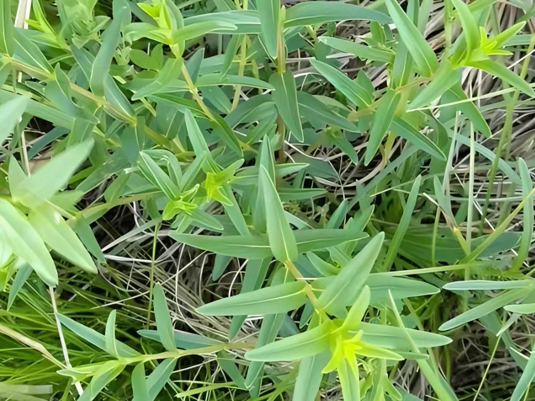
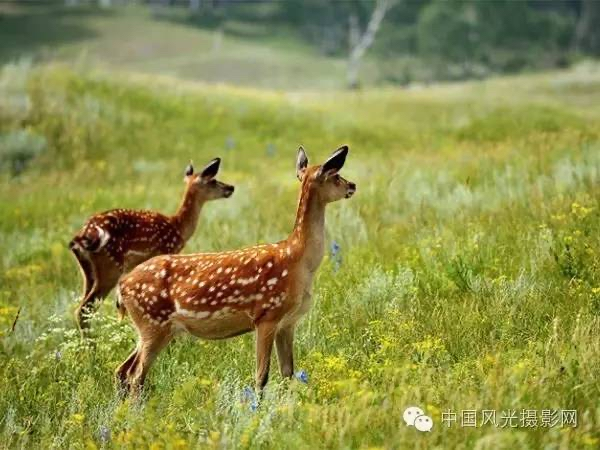
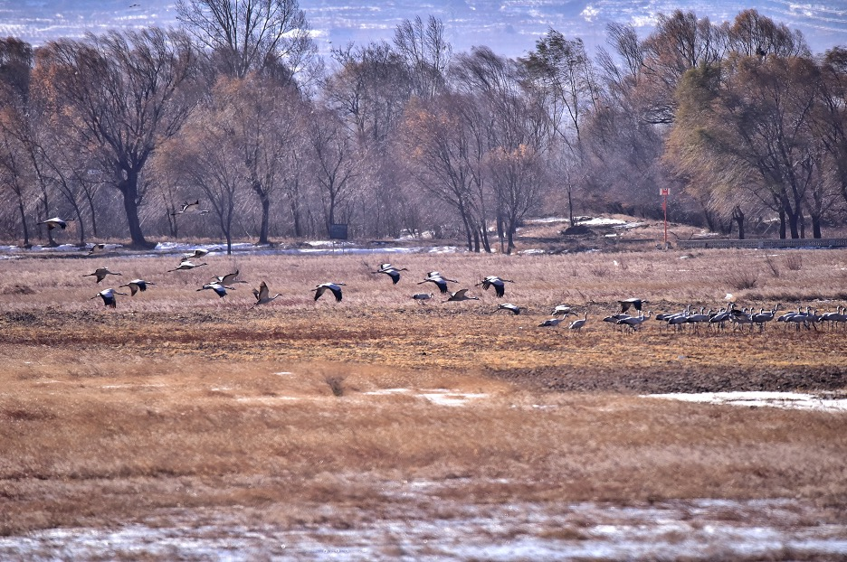
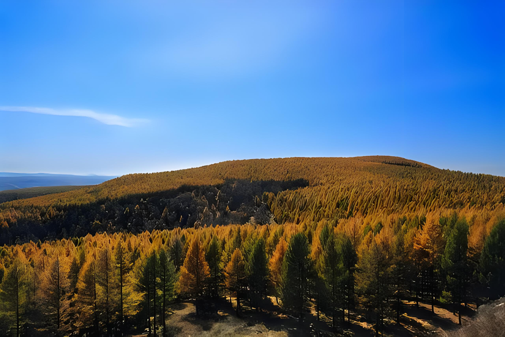
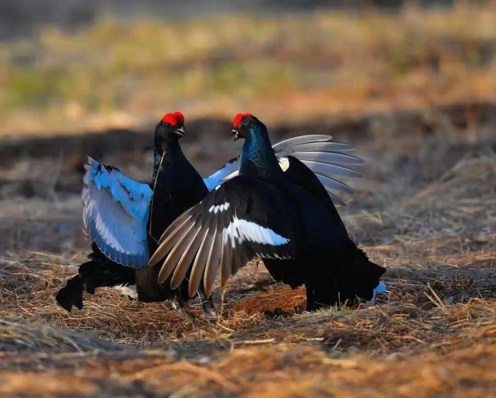
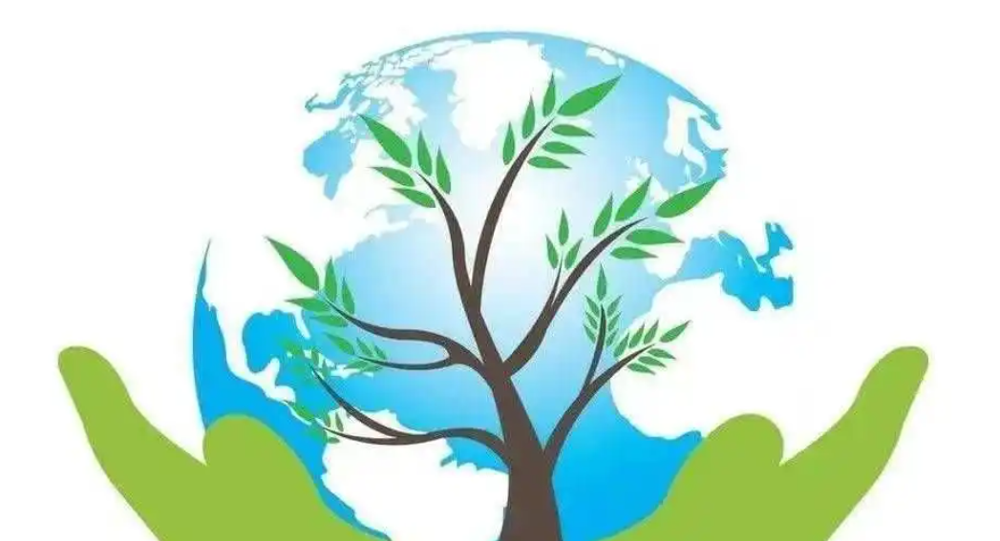
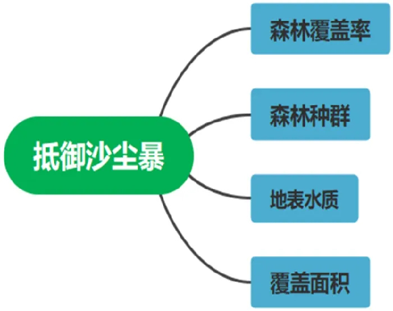
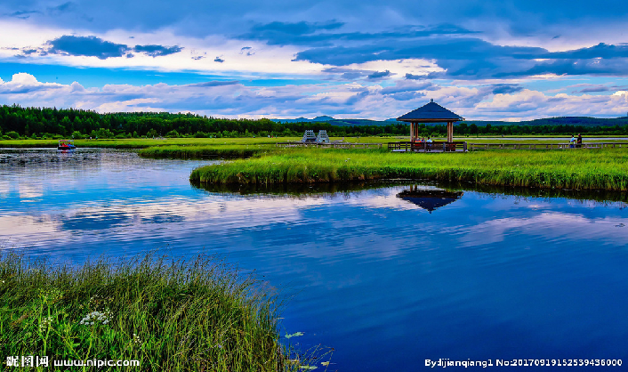

-

塞罕坝国家级自然保护区共记载野生维管束植物67科244属464种。
-

塞罕坝机械林场共有陆生野生脊椎动物256种、鱼类13种、昆虫548种
-

红松洼国家级自然保护区内有动物种70多种其中国家一级重点保护鸟类4种，二级保护重点鸟类16种，国家重点保护哺乳动物3种
-

红松洼国家级自然保护区内就有野生维管束植物595种，国家重点保护药用植物8种，优良牧草89种
-

塞罕坝地区野生动物中，有国家重点保护动物47种，其中一级5种，二级42种
-

生态保护
生态保护是指改革开放以来，党中央、国务院高度重视生态环境保护与建设工作，采取了一系列战略措施，加大了生态环境保护与建设力度。

调查结果与防范措施
diao cha jie guo yu fang fan cuo shi
防沙护林

抵御沙尘暴
大风、沙暴、干旱、霜冻等灾害性天气比较多，塞罕坝处于森林-草原交错带,从而造成植被类型多种多样,依此分别为落叶针叶林、长绿针叶林、针阔混交林、阔叶林、灌丛、草原与草甸和沼泽及水生群落
湿地修复

建设成为蓄缓水层，以达到缓流不截流的目的
在蓄缓水层上栽植水生植物或者是耐湿的植物形成蓄缓水生物带，进一步的增强湿地的蓄水能力，提高湿地水位，进一步的增强湿地的蓄水能力，提高湿地水位，增加湿地面积，并有效的恢复湿地的调节功能，从而进一步保护湿地周围的生物多样性